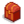

Оружие
Оружие используется для уничтожения чудовищ. Оружие можно получить от самих монстров, купить в гильдии искателей приключений или найти в сундуках в шахте.
При использовании оружия не тратится энергия.
Большинство оружия (кроме Рогаток) можно продать в гильдии искателей приключений.
С оружием можно выполнить особую атаку, нажав правой кнопкой мыши. Меч блокирует часть урона. Дубина ударяет землю, отбрасывая окружающих врагов и нанося им незначительный урон. Кинжал выполняет серию быстрых ударов. У некоторого оружия есть особые характеристики.
Также в качестве оружия можно использовать косу, кирку или топор. Они в свою очередь будут наносить небольшой урон. Использование косы не тратит энергию, а кирки и топора — тратит.
Характеристики оружия
| Вид | Название | Описание |
|---|---|---|
| Скорость | Скорость не зависит от скорости игрока. Эта скорость влияет только на частоту атаки. | |
| Защита | Защита влияет на то, сколько урона получит игрок. | |
| Вес | Вес оружия влияет на то, как далеко ваши удары отталкивают врага. | |
| Шанс крит. удара | Шанс крит. удара оружием влияет на вероятность нанесения критического удара с увеличенным уроном | |
| Сила крит. удара | Этот параметр увеличивает урон, который вы наносите врагу во время критического удара. |
Мечи
Меч — это сбалансированное оружие, позволяющее достаточно быстро атаковать и часто размахивать оружием. Их особая атака блокирует часть нанесённого вам урона и наносит небольшой урон врагу. Блок также отталкивает летающих чудовищ, включая слаймов, находящихся в прыжке.
| Вид | Название | Уровень | Описание | Урон | Шанс крит. удара | Характеристики | Способ получения | Цена покупки | Цена продажи |
|---|---|---|---|---|---|---|---|---|---|
| Ржавый меч | 1 | Старый, затупленный и ржавый меч. | 2-5 | 0.02 | Н/Д | У Марлона после первого посещения шахты | |||
| Стальной короткий меч | 1 | Стандартный металлический клинок. | 4-8 | 0.02 | Сундук на 20 уровне шахты | ||||
| Деревянный клинок | 1 | Неплохо для резного куска дерева. | 3-7 | 0.02 | Н/Д | Гильдия искателей приключений
Сундук на 10 уровне шахты (смешанные награды) |
|||
| Пиратский меч | 2 | Похоже, он когда-то принадлежал пирату. | 8-14 | 0.02 | Гильдия искателей приключений (после достижения 30 уровня шахты)
Сундук на 50 уровне шахты (смешанные награды) |
||||
| Серебряная сабля | 2 | Серебро не даст клинку заржаветь. | 8-15 | 0.02 | Гильдия искателей приключений (после достижения 20 уровня шахты)
Сундук на 50 уровне шахты (смешанные награды) |
||||
| Абордажная сабля | 3 | Клинок тонкой работы. | 9-17 | 0.02 | Гильдия искателей приключений (после достижения 25 уровня шахты)
Сундук на 60 уровне шахты (смешанные награды) |
||||
| Меч Леса | 3 | Он наделен мощью лесной магии. | 8-18 | 0.02 | Шахта (уровни 20-60) | Н/Д | |||
| Железное лезвие | 3 | Тяжелый меч. | 12-25 | 0.02 | Шахта (уровни 41-59)
Сундук на 60 уровне шахты (смешанные награды) |
Н/Д | |||
| Жучья Голова | 6 | Его не очень приятно держать в руках. | 20-30 | 0.04 | Награда за убийство 80 пещерных насекомых в гильдии искателей приключений | ||||
| Костяной меч | 5 | Очень легкий кусок заостренной кости. | 20-30 | 0.02 | Гильдия искателей приключений (после достижения 75 уровня шахты)
Сундук на 90 уровне шахты (смешанные награды) Выпадает с скелета |
||||
| Клеймор | 5 | Очень тяжелый. | 20-32 | 0.02 | Гильдия искателей приключений (после достижения 45 уровня шахты)
Сундук на 80 уровне шахты (смешанные награды) |
||||
| Глефа Нептуна | 5 | Эта реликвия появилась за пределами Самоцветного моря. | 18-35 | 0.02 | Сундуки с сокровищами (уровень рыбной ловли 2+) | Н/Д | |||
| Клинок тамплиера | 5 | Когда-то он принадлежал благородному рыцарю. | 22-29 | 0 | Гильдия искателей приключений (после достижения 55 уровня шахты)
Сундук на 80 уровне шахты (смешанные награды) |
||||
| Обсидиановое лезвие | 6 | Оно невероятно острое. | 30-45 | 0.02 | Сундук на 90 уровне шахты | Н/Д | |||
| Костяной клинок | 6 | Большой острый клинок из кости. | 26-42 | 0.02 | Сундук на 90 уровне шахты (смешанные награды) | Н/Д | |||
| Святой клинок | 7 | Он дает вам надежду. | 20-27 | .02 | Шахта (уровень 80+) | Н/Д | |||
| Закаленный палаш | 7 | Похоже, такой меч выдержит все. | 29-44 | 0.02 | Пещера Черепа
Сундук на 90 уровне шахты (смешанные награды) |
Н/Д | |||
| Зуб Йети | 7 | Он ледяной на ощупь. | 26-42 | 0.02 | Шахта (Уровни 81-99) | Н/Д | |||
| Стальной фальшион | 8 | Легкий и мощный. | 28-46 | 0.02 | Гильдия искателей приключений (после достижения 90 уровня шахты)
Шахта (Этаж 101+) Пещера Черепа Сундук на 90 уровне шахты (смешанные награды) |
||||
| Темный Меч | 9 | Он светится загадочной энергией. | 30-45 | 0.04 | Призрачный череп в шахте и Карьерной шахте | Н/Д | |||
| Лава-катана | 10 | Могучее лезвие, выкованное в раскаленной лаве. | 55-64 | 0.015 | Гильдия искателей приключений (после достижения 120 уровня шахты) | ||||
| Драконозубья сабля | 13 | Сабля из волшебного зуба. | 75-90 | 0.02 | Сундуки в Вулканическом подземелье | Н/Д | |||
| Меч Дварфов | 13 | Древний меч, который никогда не затупится. | 65-75 | 0.02 | Сундуки в Вулканическом подземелье | Н/Д | |||
| Меч Галактики | 13 | Вы такого никогда еще не видели. | 60-80 | 0.02 | Пустыня (принесите радужный осколок к трём столпам) | ||||
| Клинок Бесконечности | 17 | Истинная форма Меча Галактики. | 80-100 | 0.02 | Соедините Меч Галактики с |
Н/Д | |||
| Утюжок Хэйли | 6 | Он горяченный. От него пахнет волосами Хейли. | 30-45 | .02 | Продает Хэйли за |
Н/Д | |||
| Точилка Леи | 6 | Любимый инструмент Леи для обработки плавника. | 30-45 | .02 | Продает Лея за |
Н/Д | |||
| Мяумур | 4 | Необычное оружие из далёких земель... | 20-20 | .02 | Подвал в башне волшебника | Н/Д |
Кинжалы
Кинжалы позволяют атаковать быстрее и чаще остальных типов оружия. Однако они атакуют лишь одну клетку перед игроком, в отличие от мечей, у которых достаточно большой размах. Особая атака кинжала — это серия нескольких быстрых ударов. Во время особой атаки враг будет заблокирован на месте.
| Вид | Название | Уровень | Описание | Урон | Шанс крит. удара | Характеристики | Способ получения | Цена покупки | Цена продажи |
|---|---|---|---|---|---|---|---|---|---|
| Разделочный нож | 1 | Маленькое, легкое лезвие. | 1-3 | 0.04 | Шахта (уровни 1-19) | Н/Д | |||
| Железный кинжал | 1 | Обычный кинжал. | 2-4 | 0.03 | Гильдия искателей приключений (с 15 уровня шахты)
Сундук на 10 уровне шахты (смешанные награды) |
||||
| Башня Ветров | 1 | Маленький и быстрый клинок. | 1-5 | 0.02 | Шахта (уровни 21-40)
Сундук на 10 уровне шахты (смешанные награды) |
Н/Д | |||
| Эльфийский клинок | 2 | Такое могли изготовить только ловкие руки эльфа. | 3-5 | 0.04 | Сундук на 20 уровне шахты (смешанные награды) | Н/Д | |||
| Воровская заточка | 4 | Оружие быстрых и скрытных. | 7-12 | 0.04 | Пещера Черепа
Сундук на 60 уровне шахты (смешанные награды)
|
Н/Д | |||
| Кристальный кинжал | 4 | Клинок из очищенного кварца. | 4-10 | 0.03 | Сундук на 60 уровне шахты | Н/Д | |||
| Теневой кинжал | 4 | Когда вы прикладываете его к уху, вы слышите вопли 1,000 душ. | 10-20 | 0.04 | Шахта (Этажи 61-79, 101-119)
Сундук на 80 уровне шахты (смешанные награды) |
Н/Д | |||
| Обломок трезубца | 5 | Его нашли в море, но он все еще острый. | 15-26 | 0.02 |  Сундуки с сокровищами (0,6%) | Н/Д | |||
| Злой Крис | 8 | Клинок выкован из иридиевого сплава. | 24-30 | 0.06 | Ящики в Пещере Черепа
Сундук на 90 уровне шахты (смешанные награды) |
Н/Д | |||
| Кинжал Галактики | 8 | Вы такого никогда еще не видели | 30-40 | 0.02 | Гильдия искателей приключений (после получения Меча Галактики) | ||||
| Кинжал Дварфов | 11 | Древний кинжал, который никогда не затупится. | 32-38 | 0.03 | Сундуки Вулканического подземелья | Н/Д | |||
| Драконозубья заточка | 12 | Заточка из волшебного зуба. | 40-50 | 0.05 | Сундуки Вулканического подземелья | Н/Д | |||
| Иридиевая игла | 12 | Конец этой иглы невероятно острый, вплоть до атомного уровня. | 20-35 | 0.1 | 14% шанс падения с особых слаймов в шахте, когда Алтарь испытаний активен | Н/Д | |||
| Кинжал Бесконечности | 16 | Истинная форма Кинжала Галактики. | 50-70 | 0.06 | Совместите Кинжал Галактики с |
Н/Д | |||
| Карандаш Эллиота | 8 | Эллиот писал им свою книгу. Острый! | 24-30 | .06 | Продает Эллиот за |
Н/Д | |||
| Дощечка Эбби | 8 | Она сделана из мраморного дерева. | 24-30 | .06 | Продает Абигейл за |
Н/Д |
Дубины
Дубина — тяжелое оружие, которое, как правило, медленнее мечей и кинжалов, но его размах довольно широк. Её особая атака сотрясает землю перед игроком, отбрасывая врагов назад и нанося им небольшой урон. Данный урон никогда не будет критическим.[1]
Щелчок правой кнопкой мыши и немедленное удержание левой кнопки мыши (или клавиши «С») приведет к быстрой последовательности нескольких атак. Подобного результата можно также добиться, если изначально нажата и удерживается левая кнопка мыши (клавиша «С») и затем нажата правая кнопка мыши.
| Вид | Название | Уровень | Описание | Урон | Шанс крит. удара | Характеристики | Способ получения | Цена покупки | Цена продажи |
|---|---|---|---|---|---|---|---|---|---|
| Бедро | 2 | Старая, тяжелая кость, покрытая веками въевшейся грязи. | 6-11 | 0.02 | Шахта Уровень 10 (смешанные награды) | Н/Д | |||
| Деревянная дубина | 2 | Кусок дерева, грубо вытесанный в форме дубины. | 9-16 | 0.02 | Н/Д | Шахта Уровни 1-39 Шахта Уровень 20 (смешанные награды) |
Н/Д | ||
| Деревянный молот | 3 | Его твердая головка наносит внушительный урон. Для дубины он относительно легкий. | 15-24 | 0.02 | Шахта (Уровни 41-79) Гильдия искателей приключений (с 40 уровня шахты) Шахта Уровень 60 (смешанные награды) |
||||
| Свинцовый прут | 4 | Он невероятно тяжелый. | 18-27 | 0.02 | Шахта (Уровни 41-79) | Н/Д | |||
| Дубина | 5 | Лучший друг воротилы. | 27-40 | 0.02 | Шахта на 80 уровне (смешанные награды) Шахта (Уровни 101+) |
Н/Д | |||
| Бита Алекса | 7 | На ее конце вмятина от знаменитого Большого Удара Алекса. | 40-55 | .02 | Продает Алекс за |
Н/Д | |||
| Гаечный ключ Мару | 7 | Большой металлический ключ. От него пахнет Мару. | 40-55 | .02 | Продает Мару за |
Н/Д | |||
| Дуболом | 7 | Чрезвычайно тяжелый молот, который отправит врагов в полет. | 40-55 | 0.02 | Шахта (Уровни 81-99) Шахта Уровень 110 (смешанные награды) Пещера Черепа |
Н/Д | |||
| Молоточек Харви | 7 | Он навевает воспоминания о клинике Харви. | 40-55 | .02 | Продает Харви за |
Н/Д | |||
| Потерянная палица Себа | 7 | Одна из копий средневекового оружия Себастиана. | 40-55 | .02 | Продает Себастиан за |
Н/Д | |||
| Сковорода Пенни | 7 | Любимая сковородка Пенни. Изнутри к ней прилипла какая-то гадость. | 40-55 | .02 | Продает Пенни за |
Н/Д | |||
| Старая гитара Сэма | 7 | Она знавала лучшие деньки. | 40-55 | .02 | Продает Сэм за |
Н/Д | |||
| Молот Галактики | 12 | Он сделан из сверхлегкого материала, который вы раньше никогда не видели. | 70-90 | 0.02 | Гильдия искателей приключений (после получения Меча Галактики) | ||||
| Молот Дварфов | 13 | Испускает едва слышимое гудение. | 75-85 | 0.02 | Вулканическое подземелье (сундуки) | Н/Д | |||
| Драконозубья дубинка | 14 | Дубинка из волшебного зуба. | 80-100 | 0.02 | Вулканическое подземелье (сундуки) | Н/Д | |||
| Молот Бесконечности | 17 | Истинная форма Молота Галактики. | 100-120 | 0.02 | Соедините |
Н/Д |
Рогатки
Урон, наносимый рогаткой, зависит от используемых снарядов. Рогатка мастера в общем случае наносит в 2 раза больше урона, чем обычная Рогатка при использовании одинаковых снарядов.
| Вид | Название | Описание | Урон | Шанс крит. атаки | Способ получения | Цена покупки | Цена продажи |
|---|---|---|---|---|---|---|---|
| Рогатка | Стреляет камнями. | Зависит от снарядов | 0.02 | Шахта (сундук на 40-м уровне) | Нельзя продать | ||
| Рогатка мастера | Стреляет камнями. | Зависит от снарядов | 0.02 | Шахта (сундук на 70-м уровне) | Нельзя продать |
Снаряды
Чтобы использовать снаряды, возьмите их в инвентаре, а потом щёлкните  правой кнопкой мыши на рогатке.
правой кнопкой мыши на рогатке.
Вид используемых снарядов определяет наносимый урон, который высчитывается по следующей формуле:
- Рогатка (обычная):
- Урон = МножительСнаряда + случайное число между [-(МножительСнаряда / 2), МножительСнаряда + 1]
- Рогатка мастера:
- Урон = 2 * (МножительСнаряда + случайное число между [-(МножительСнаряда / 2), МножительСнаряда + 1])
С худшими снарядами (например: фрукты, овощи, или яйца) Рогатка может нанести 1-3 единиц урона, а Рогатка мастера - до 2-6 единиц. С лучшим видом снарядов - иридиевой рудой - Рогатка может нанести до 25-101 единиц урона, в то время как Рогатка мастера - до 50-202 единиц.
В качестве снарядов можно использовать следующие предметы:
| Предмет | Множитель снаряда | Урон Рогатки | Урон Рогатки мастера |
|---|---|---|---|
| Все фрукты • Все овощи • Все яйца | 1 | 1-3 | 2-6 |
| 15 | 8-31 | 16-62 | |
| 10 | 5-21 | 10-42 | |
| 20 | 10-41 | 20-82 | |
| 30 | 15-61 | 30-122 | |
| 50 | 25-101 | 50-202 | |
| 20 | 10-41 | 20-82 | |
| 5 | 3-11 | 6-22 | |
| 2 | 1-5 | 2-10 |
Недоступное оружие
| Вид | Название | Тип | Уровень | Описание | Урон | Шанс крит. удара | Характеристики | Цена продажи |
|---|---|---|---|---|---|---|---|---|
| Рогатка Галактики | Рогатка | Н/Д | Выглядит очень мощной. | Зависит от снаряда | 0.02 | Н/Д | Нельзя продать | |
| Рапира | Меч | 4 | Элегантный клинок. | 15-25 | 0.02 |
Уровень оружия и цена продажи
Уровень оружия основывается на очках оружия (округляется в меньшую сторону): очки оружия / 7 + 1.
Очки оружия вычисляются с помощью некоторых характеристик оружия, например, средний урон, скорость, вид, дополнительная защита и точность, шанс крит. удара и множитель крит. урона.
Очки оружия (округляется в меньшую сторону) = средний урон оружия (округляется в меньшую сторону) x (1 + 0.03 x скорость{миним. 0; 15, если кинжал) + (точность / 2 + защита) + ((шанс крит. удара - 0.02) x 200) + ((множитель крит. урона - 3) x 6) + 20{если темный меч, иначе 0} + (защита x 2)[2]
Вот пример того, как по формуле вычисляется уровень иридиевой иглы: (27 x (1 + 0.03 x 15) + 0 / 2 + 0 + ((0.10 - 0.02) x 200) + (7 - 3) x 6) + 0 + 0) / 7 + 1 (При округлении в меньшую сторону) = 12
Цена продажи оружия высчитывается так:уровень предмета x 100 / 2.[3]
Баги
- Вы можете попасть в пространство вокруг карты любой локации (например, черная зона внутри теплицы) многократно размахивая мечом, стоя прямо около точки выхода.
- Чтобы выбраться из этого пространства, просто войдите в точку выхода из локации.
- Вы можете использовать дополнительную атаку дубины несколько раз в короткий отрезок времени, если после нажатия правой кнопки мыши, но до конца анимации атаки, успеть нажать и удерживать левую кнопку (или клавишу «C»). Это может помочь в битвах с высокоуровневыми врагами со слабым оружием.
- Нажав левую кнопку слишком рано, вы просто используете обычную атаку, вместо дополнительной.
- Этот глитч может иногда застопорить игру, если еще одна анимация начнет проигрываться после многократных нажатий на левую кнопку мыши/клавишу «C».
- Если вы используете блок, пока в то же время взаиможействуете с объектом, например, кустом или жителем, вы сможете "сломать" спрайт персонажа, когда одновременно будет показан спрайт блока оружием и спрайт, когда персонаж смотрит прямо в экран. Вы останетесь в таком состоянии, пока не используете блок снова.
- Если вы нажмете Правый Shift + R + Delete во время анимации удара, анимация оборвется. Это может помочь убивать чудовищ быстрее.
Разное
- В коде игры есть неиспользуемый фрагмент, позволяющий игроку получить по почте "Потрепанный меч" в качестве награды за неизвестнное задание. Этот меч можно было улучшить 4 раза (способ неизвестен), превращая его в "Меч героя", "Святой меч", "Темный меч", и, наконец, "Меч галактики."
- По словам разработчика ConcernedApe, Святой клинок мог бы быть никогда не добавлен в финальную версию игры.
Примечания
История
- 1.4: На компьютерной и консольной версиях рогатки теперь можно выкинуть в мусорное ведро в инвентаре игрока (в мобильной версии уже было возможно). Добавлен способ получения темного клинка.
- 1.5: Рогатки после их получения можно приобрести в Гильдии искателей приключений. Добавлен способ получения следующих оружий: Эльфийский клинок, Бедро, Дубина, Теневой кинжал, Зуб Йети. Добавлено новое оружие. Изменен способ подсчета уровня оружия. Это привело к понижению уровня и стоимости продажи большинства оружия кроме дубин. Исправлена ошибка, при которой Защита оружия не давала игроку бонусов.